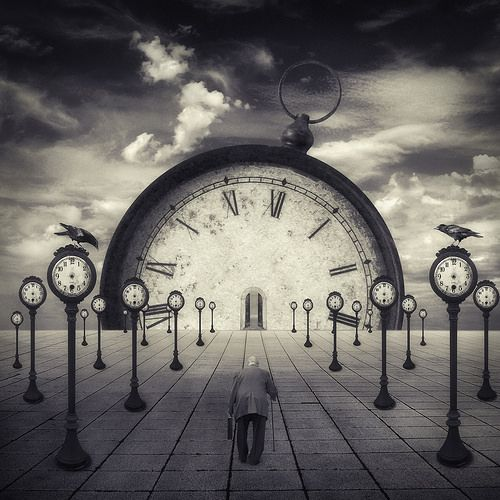

Diciembre 21 del 2019
Las tres abstracciones de la vida
Filosofia
Las abstracciones de la vida pueden ser simplemente eufemismos subjetivos de cada persona. Pero son y serán lo más trascendente de nuestra comprensión.
Quien vive bajo términos filosóficos siempre encuentra un ¿Por qué? para vivir. Muchos se dejan llevar por dogmas o doctrinas tan sólo por la sencilla razón que dentro de ellas encuentran las respuestas que necesitan a esas tres grandes palabras que tantas preguntas les hacemos.
Tal vez muchos han llevado su vida mucho más allá, pero en cualquier punto de sus vida se enfrentan a estas tres grandes verdades que dejan inmutado al ser. Y me refiero a Amor, Tiempo, Muerte. Cada poeta desde que la humanidad ha podido recapitular su historia se ha preguntado ¿Qué es el amor? y no sólo los poetas, sino también esos grandes maestros espirituales, los políticos o aquella persona que pueda generar tan solo una idea. Pero la otra abstracción de la cual hemos peleado tanto, le escribimos cartas, hasta que llegamos a cierto punto que no queremos que más avance, ya muchos saben a lo que me refiero. ¡Si! al Tiempo, esa abstracción tan impertinente y a la vez moderada que en muchas ocasiones se vuelve imperante en nosotros y nos deja observando como esa pequeña aguja sigue avanzando. Y la más despreciable de todo, menos para los creyentes en un paraíso, o aquellos que alcanza el nirvana pero que aún así no quieren dejar este mundo; hablo de la muerte de ese simple proceso de la vida del que tanto huimos pero que en cualquier momento nos vamos a enfrentar. Es ella esa encantadora Muerte.
Amor
Cuando hablo del amor siempre lo haré de una manera subjetiva, porque lo hablaré de acuerdo a mi experiencia. El ser objetivo con estas tres grandes abstracciones sería mentir a todos los lectores. Por eso cada persona está destinada a vivirla y a sentirla.
El amor llega de manera torrencial, está en todos lados. Hace poco hice servicio en un hospital pediátrico y veía el derroche de amor de esos niños con tan solo ver sus manitos al recibir esos insignificantes regalos (uso la palabra insignificante, porque el mejor regalo me lo dieron ellos) el poder sentir ese inconmensurable amor que ellos transmiten.
Así como lo digo el amor está en todas partes, en mi post de presentación coloqué que soy una persona que le gusta hacer servicios sociales, dar un granito de arena sin que se entere mi mano izquierda de lo que hace mi derecha. Digo esto porque a la hora de ser servicio en principio pensé que lo hacía por lo demás, pero luego de reflexionar entendí que aquellas personas que más les doy son ellas las que en realidad alimentan más mi espíritu.
Puedo decir que lo que potencia el amor, es dar de lo mejor al prójimo.
Tiempo
Cuando se habla del tiempo se habla de la vida, esto es algo que usan mucho los coach. Frase con la que no estoy de acuerdo, es simplemente verosímil. Porque el tiempo es una abstracción más de la vida, es el más democrático de todos, ya que cada quien tiene las mismas 24h, nadie puede decir voy a ahorrar estas 2h para mañana. Ni siquiera pueden decir voy adelantar el tiempo.
Nuestra vida tiene que ser vivida entre instantes y momentos, después de todo uno de los poetas que más me gusta dice: "La vida está llena de recuerdos", y es que para que esté llena de esos recuerdos necesitamos del tiempo para vivirla, vaya paradoja en la que estoy cayendo (espero no enredaros). Si nos sujetamos al tiempo con una agenda planificada viviremos la vida según parámetros, en ocasiones es bueno el desenfreno y el sucumbir nuestra nariz en el deseo.
Lo más exorbitante que podemos apreciar en vida es el tiempo, por ello la decisión más correcta es el vivir.
Muerte
El más triste de los temas y el que más evitan las personas es este de la muerte, es como la llamó el poeta Gibran la indeseada más espeluznante que se puede enfrentar cualquier persona.
¿Quién no se ha enfrentado a ella? - Quien haya dicho que no sería mentirse a sí mismo, ya que muchas personas que se relacionan o que tienen familias habrán pasado por ese momento de pesadumbre.
Todos tienen que tener muy claro que la muerte es un proceso de vida, la vida misma se complementa con la muerte. Ese deseo de felicidad se debe a que la muerte pronto nos llegará. Por eso buscamos de ser felices, porque sabemos que la muerte tarde o temprano atrapará este cuerpo que lleva encapsulado lo divino, el cuerpo es un sostén que necesita unirse y hacerse uno con la tierra.
La muerte pronto nos llegará, pero su mensaje es que antes conoceremos la felicidad para que cuando ella nos llegue, la mantengamos en plenitud.

Carlos Romano
Estudiante Ing. de Sistemas
Actualmente me encuentro cursando el sexto semestre de Ing en Sistemas soy un joven emprendedor, visionario y creativo.